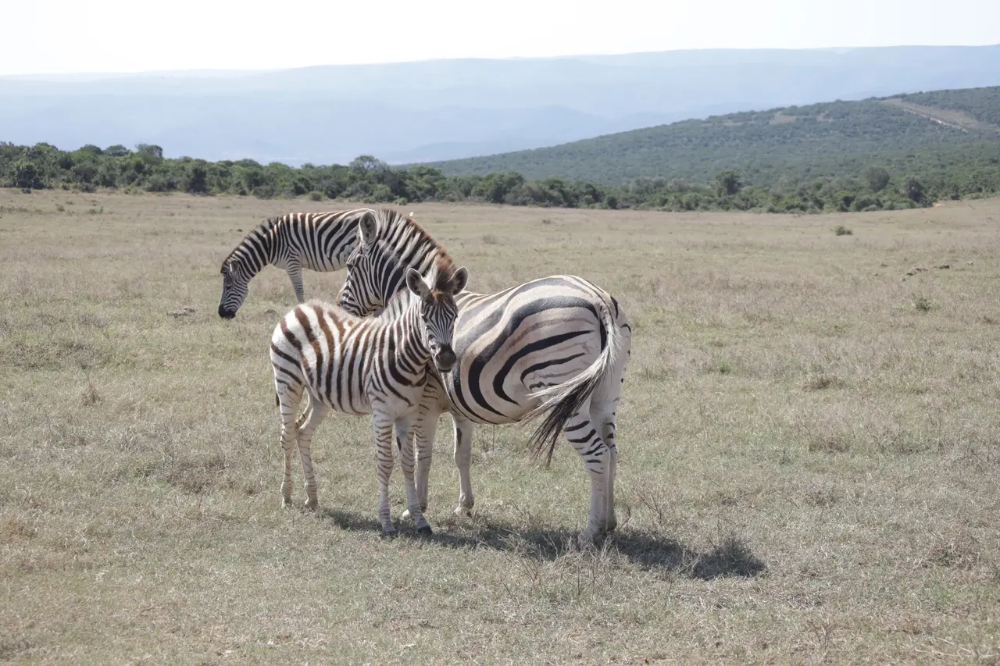

← Retour au studio
Carnet 01 · Garden Route
Road trip.
De la ferme d’autruches aux sentiers de Tsitsikamma, en passant par les grands espaces d’Addo.
Voir les 205 photosQuatre étapes
La collection
Chargement de la collection…